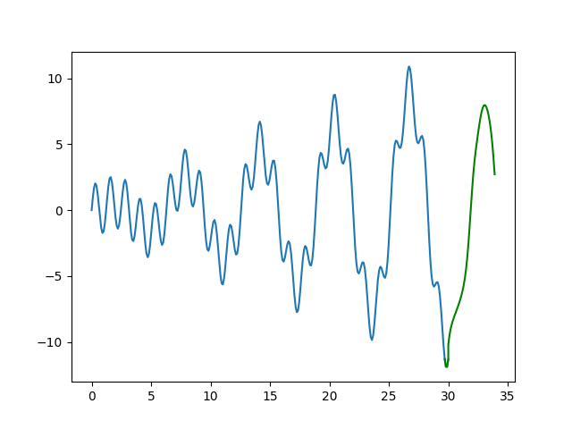

Uzun Kısa-Vade Hafıza Ağları (Long Short-Term Memory Networks, LSTM)
Kendini tekrarlayan YSA (RNN) yapılarının içindeki gizli konum $ht$ (önceki yazıda $st$) olarak bir zaman diliminden bir diğerine aktarılabiliyordu, ve bu sırada bir matris çarpımı üzerinden değişime uğrayabiliyordu. Böylece her zaman diliminde yeni görülen verinin "hafıza'' olarak ta tanımlanabilen $h_t$'ye etkisi olabiliyordu. RNN dış dünya hakkındaki iç modelini böyle güncelliyordu.
Fakat RNN ile tarif edilen bu güncellemeye hiç bir sınır getirmedik. Biraz düşünürsek bu güncellemenin biraz kaotik bir hal alabileceğini görebiliriz [1]. Mesela bir filmi kare kare izleyerek filmde neler olduğunu tarif etmeye uğraşan bir RNN düşünelim. Bir karede bir karakterin ABD'de olduğunu düşünebilir, ama sonraki karede karakterin suşi yediğini görüyor ve Japonya'da olduğuna karar verebilir, sonra Panda ayısı görüyor ve karakteri kuzey kutbunda zannediyor.
Bu tarif edilen kaos enformasyonun çok hızlı etki ettiğini ve aynı hızda yokolduğuna işaret. Bu tür bir yapıda modelin uzun vadeli hafıza tutması oldukça zor. Bize gereken modelin sadece güncelleme yapması değil, güncelleme yapmayı da öğrenmesi. Ali adlı bir karakter film karesinde yoksa o kareler Ali hakkındaki bilgiyi güncellemek için kullanılmamalı, aynı şekilde Ayşe'nin içinde olmadığı kareler onun hakkındaki bilgiyi güncellemek için kullanılmamalı.
Çözüm için şöyle bir yaklaşım kullanabiliriz.
1) Bir "unutma'' mekanizması ekle. Film seyrediyoruz, bir sahne bitiyor, o sahnenin hangi gün, saat kaçta, nerede olduğunu unutuyoruz. Fakat bir karakter o sahnede ölmüşse, bunu hatırlıyoruz. Modelin ne zaman hatırlayacağını, ne zaman unutacağını öğrenmesini istiyoruz (dikkat sadece belli bir şekilde unutması, hatırlaması değil, tüm bunları nasıl, ne zaman yapacağını öğrenmesi).
2) Bir belleğe yazma (zulaya atma?) mekanizması. Modelin yeni bir kare gördüğünde o karedeki bilginin kaydetmeye değer olup olmadığına karar vermesi lazım, ve bu öğrenilse iyi olur.
3) .. ki yeni bir girdi gelince model ihtiyacı olmadığı bilgiyi unutacak. Sonra girdinin hangi kısmının faydalı olduğuna karar verecek ve o kısmı uzun-vadeli hafızasına kaydedecek.
4) Bir odaklanma mekanizması. Uzun-vadeli hafızanın hangi kısmı sık kullanım gerekiriyor, işlem hafızası (working memory) hangisi, buna karar vermek.
Bize gereken bir uzun kısa-vade hafıza ağıdır, teknik ismiyle LSTM. RNN her zaman adımında hafızasını kontrolsüz bir şekilde güncelleyebiliyorken, bir LSTM hafızasını çok daha seçici, kararlı bir şekilde günceller, bunu yaparken spesifik öğrenme mekanizmaları kullanır ki bu mekanizma ona görülen bilginin hangi kısmının hatırlanmaya değer, hangisinin güncellenmesinin gerekli olduğunu, ve hangisinin daha fazla odaklanılmaya ihtiyaç duyduğunu belirler.
Matematiksel olarak $t$ anında bir $xt$ girdisi alıyoruz, uzun-vadeli ve işlem hafızası $C{t-1}$ ve $h_{t-1}$ bir önceki zaman diliminden bir önceki bu zamana aktarılıyor ve onları bir şekilde güncellemek istiyoruz. Bize gereken bir tür hatırlama geçidi (remember gate), bu elektronik devrelerdeki gibi bir geçit, 0 ile 1 arasında olacak $n$ tane sayı, bu sayı $n$ hafıza ögesinin ne kadar hatırlanacağını, yani ne kadar uzun-vadeli olup olmayacağını belirleyecek. 1 tut, 0 unut demek olacak.
Ufak bir YSA kullanarak bu geçidi öğrenebiliriz,
$$ ft = \sigma (Wr xt + Ur h_{t-1}) $$
Bu basit, sığ (derin olmayan) bir YSA, $\sigma$ sigmoid aktivasyonu. Sigmoid kullandık çünkü 0 ile 1 arasında çıktıya ihtiyacımız var. Şimdi girdiden öğreneceğimiz bilgiyi hesaplamamız lazım, bu bilgi uzun-vadeli hafızamız için bir aday olacak.
$$ Ct' = \phi(Wl xt + Ul h_{t-1})$$
$\phi$ bir aktivasyon fonksiyonu, çoğunlukla $\tanh$ olarak seçilir.
Fakat bir adayı hafızamıza eklemeden önce hangi bölümlerinin kullanıma, kaydetmeye değer olduğunu öğrenmemiz gerekir. Web'de bir şey okurken kendi zihnimizde neler olduğunu düşünelim. Bir haber makalesi okuyoruz mesela, Trabzonspor'un hep kötüye gittiğini, hep yanlış tranferler yaptığını anlatan bir haber okuyoruz, ama bu haberi fenerbahce.org sitesinde okuyorsak o habere daha az önem verebiliriz.
$$ it = \sigma (Ws xt + Us h_{t-1}) $$
Şimdi tüm bu basamakları birleştirelim. İhtiyacımız olmayan hafızaları unuttuktan ve bilgilerin faydalı olabilecek kısımlarını sakladıktan sonra, elimize bir güncellenmiş uzun-vadeli bellek geçer,
$$ Ct = ft \circ c{t-1} \circ it \circ \tilde{C}_t $$
ki $\circ$ operasyonu her iki taraftaki değişkenin içindeki her ögenin birer birer çarpılması (element-wise multiplication) demek.
Sonra işlem hafızasını güncellememiz lazım, uzun-vade belleğimizi anlık işlem için faydalı olabilecek şekilde nasıl odaklarız, onu öğrenmek istiyoruz. O zaman bir odaklanma vektörü öğreniriz,
$$ ot = \sigma (Wf xt + Uf h_{t-1}) $$
O zaman işlem hafızamız
$$ ht = ot \circ \phi (C_t)$$
Yani odak değeri 1 olan öğelere tam dikkatimizi veriyoruz, 0 olanlara hiç dikkat etmiyoruz.
Kuşbakışı ile tüm resmi görelim, kendini tekrar eden LSTM yapısı alttaki gibi,

Sol ve sağdaki hücreler ortadakinin kopyası.
Kıyasla bir RNN'nin iç yapısı çok daha basittir,

LSTM resmindeki her birimin formülleriyle beraber teker teker tekrar üzerinden geçmek gerekirse [2] - ilk adım hücre bilgisinden neleri atacağımıza karar vermek. Bu karar unutma karar tabakası adı verilen bir sigmoid tabakasında veriliyor, tabaka $h{t-1}$ ve $xt$'ye bakıyor ve $C_{t-1}$ hücre konumundaki her değer için 0 ile 1 arasında bir sayı üretiyor. 1 değeri tamamen tut, 0 değeri tamamen unut anlamına geliyor (tüm $b$ değerleri yanlılık -bias- için).

Bir sonraki adım hücrede hangi yeni bilgiyi depolayacağımıza karar vermek. Bu kararın iki parçası var, önce girdi geçit tabakası (input gate layer) hangi değerleri güncelleyeceğimize karar veriyor, ardından bir $\tanh$ tabakası bir "aday vektörü'' $\tilde{C}_t$ üretiyor, bu vektör, adı üzerinde, hücre konumuna eklenmeye aday bilgiler. Ardından bu iki vektör birleştirilip konumu güncellemek için yeni bir vektör yaratılıyor.

Sıra güncelleme iş bantına (update conveyor) geldi. Herhalde bu isim verilmiş çünkü hücrenin en üstünde direk soldan sağa giden bu ok bir tür fabrika iş bantı gibi, bir ana akım hattı. Bir kaç bilgi akımı bu ana kola giriyor. Bu iş bantının görevi hücrenin eski konum bilgisini güncellemek, $C{t-1}$'i $Ct$ haline getirmek. Önceki adımlar ne yapılması gerektiğine karar vermişti, şimdi bu kararları eyleme geçirme zamanı. Eski konum bilgisini $ft$ ile çarpıyoruz, böylece unutmak istediklerimizi unutuyoruz. Sonra $it * C_t'$'yi ekliyoruz, bunlar yeni konumu ne kadar güncellemek istediğimizi belirleyen ağırlıklarla ölçeklenmiş yeni aday değerler.

En son adım tahmin adımı, bu adımda artık çıktının ne olacağına karar veriyoruz. Çıktı mevcut hücre konumunu baz alacak, ama onun filtrelenmiş bir hali olacak. İlk önce bir sigmoid işleterek konumun hangi kısmının çıktıya verileceğini kararlaştırıyoruz. Ardından mevcut konum bilgisini bir $\tanh$'e veriyoruz, ki bu değerlerin $-1,+1$ arasında gelmesini sağlıyoruz, ve bu sonucu sigmoid'den gelen değer ile çarpıyoruz, ki sadece istediğimiz kısmın dışarı verilmesini sağlayalım.

Şimdi üstteki formülleri kullanarak TensorFlow ile sıfırdan bir LSTM kodlayalım. Amacımız daha önce RNN için gördüğümüz zaman serisini öğrenmek, bu seriyi 5'er 5'er okuyacağız, yani yanyana 5 seri öğesini okuyacağız, ve 6. seri değeri hedef değeri olacak, seri içinden bu şekilde örneklem yaparak bir ufak toptan eğitim seti yaratacağız. Sonra serinin hiç görmediğimiz "geleceğini'' tahmin etmeye uğraşacağız.
import tensorflow as tf
import numpy as np
from pprint import pprint
import datetime
import pandas as pd
import numpy as np
import matplotlib.pyplot as plt
tf.reset_default_graph()
np.random.seed(1)
tf.set_random_seed(1)
LSTM_SIZE = 30
t_min, t_max = 0, 30
resolution = 0.1
sequence_length = 4
instruction_count = 1
epoch = 500
def f(t):
return t * np.sin(t) / 3 + 2 * np.sin(t*5)
def next_batch(batch_size, n_steps):
t0 = np.random.rand(batch_size, 1) * (t_max - t_min - n_steps * resolution)
Ts = t0 + np.arange(0., n_steps + 1) * resolution
ys = f(Ts)
X = ys[:, :-1].reshape(-1, n_steps, 1)
y = ys[:, 1:].reshape(-1, n_steps, 1)
y = y[:,-1,:]
y = y.flatten()
print y.shape
return list(X),y
reference_input_data,reference_output_data = next_batch(400, sequence_length)
# verinin 1/4'u egitim gerisi test
NUM_EXAMPLES = len(reference_input_data) / 4
test_input = reference_input_data[NUM_EXAMPLES:]
test_output = reference_output_data[NUM_EXAMPLES:]
train_input = reference_input_data[:NUM_EXAMPLES]
train_output = reference_output_data[:NUM_EXAMPLES]
print train_input[1]
print train_output[1]
data = tf.placeholder(tf.float32,
[None, sequence_length, instruction_count],
name='data')
target = tf.transpose(tf.placeholder(tf.float32, [None], name='target'))
FEATURE_SIZE = 1
def default_weights_and_bias():
Weights = tf.Variable(tf.truncated_normal([LSTM_SIZE,
LSTM_SIZE + FEATURE_SIZE],
-0.2, 0.1))
bias = tf.Variable(tf.constant(0.0, shape = [LSTM_SIZE, 1]))
return Weights, bias
W_f, _ = default_weights_and_bias()
b_f = tf.Variable(tf.constant(1.0, shape = [LSTM_SIZE, 1]))
# Unutma tabakasi
def f_t(ht_minus_1_and_xt):
return tf.sigmoid(tf.matmul(W_f, ht_minus_1_and_xt) + b_f)
W_i, b_i = default_weights_and_bias()
# Girdi gecidi tabakasi
def i_t(ht_minus_1_and_xt):
return tf.sigmoid(tf.matmul(W_i, ht_minus_1_and_xt) + b_i)
W_C, b_c = default_weights_and_bias()
# is banti icin adaylar
def candidate_C_t(ht_minus_1_and_xt):
return tf.tanh(tf.matmul(W_C, ht_minus_1_and_xt) + b_c)
def C_t(ht_minus_1_and_xt, Conveyor, CandConv):
return f_t(ht_minus_1_and_xt) * Conveyor + i_t(ht_minus_1_and_xt) * CandConv
W_o, b_o = default_weights_and_bias()
# guncellenmis is banti
def h_t(ht_minus_1_and_xt, FinalConveyor):
o_t = tf.sigmoid(tf.matmul(W_o, ht_minus_1_and_xt) + b_o)
return o_t * tf.tanh(FinalConveyor)
def lstm_cell(ht_minus_1_and_Conveyor, xt):
ht_minus_1, Conveyor = ht_minus_1_and_Conveyor
ht_minus_1_and_xt = tf.transpose(tf.concat([ht_minus_1, xt], 1))
CandidateConveyor = candidate_C_t(ht_minus_1_and_xt)
FinalConveyor = C_t(ht_minus_1_and_xt, Conveyor, CandidateConveyor)
lstm_prediction = tf.transpose(h_t(ht_minus_1_and_xt, FinalConveyor))
return(lstm_prediction, FinalConveyor)
data_length = tf.shape(data)[0]
def lstm_loop(last_lstm_prediction, last_state, step):
lstm_prediction, state = lstm_cell((last_lstm_prediction, last_state),
data[:, step, :])
return lstm_prediction, state, tf.add(step, 1)
initial_Conveyor = tf.zeros([LSTM_SIZE, data_length])
initial_prediction = tf.zeros([data_length, LSTM_SIZE])
timesteps = sequence_length
for_each_time_step = lambda a, b, step: tf.less(step, timesteps)
arg = (initial_prediction, initial_Conveyor, 0)
lstm_prediction, lstm_state, _ = tf.while_loop(for_each_time_step,
lstm_loop, arg,
parallel_iterations=32)
weight = tf.Variable(tf.truncated_normal([LSTM_SIZE, 1]))
bias = tf.Variable(tf.constant(0.0, shape=[1]))
prediction = tf.matmul(lstm_prediction, weight) + bias
with tf.name_scope('mean_square_error'):
mean_square_error = tf.reduce_sum(tf.square(tf.subtract(target, tf.unstack(prediction, axis = 1))))
tf.summary.scalar('mean_square_error', mean_square_error)
optimizer = tf.train.AdamOptimizer()
minimize = optimizer.minimize(mean_square_error)
mistakes = tf.not_equal(target, tf.round(tf.unstack(prediction, axis = 1)))
sess = tf.InteractiveSession()
date = str(datetime.datetime.now())
init_op = tf.global_variables_initializer()
saver = tf.train.Saver()
sess.run(init_op)
for i in range(epoch):
if (i + 1) % 20 == 0:
mean_squ_err = sess.run(mean_square_error, {data: test_input, target: test_output})
print('Epoch {:4d} | mean squ error {: 3.1f}'.format(i + 1, mean_squ_err))
sess.run(minimize,{data: train_input, target: train_output})
(400,)
[[ 4.00159218]
[ 4.4298434 ]
[ 4.67217731]
[ 4.52697138]]
3.87853505042
Epoch 20 | mean squ error 3181.8
Epoch 40 | mean squ error 1860.6
Epoch 60 | mean squ error 1307.7
Epoch 80 | mean squ error 903.1
Epoch 100 | mean squ error 628.8
Epoch 120 | mean squ error 477.8
Epoch 140 | mean squ error 390.5
Epoch 160 | mean squ error 323.5
Epoch 180 | mean squ error 271.9
Epoch 200 | mean squ error 233.8
Epoch 220 | mean squ error 204.4
Epoch 240 | mean squ error 180.8
Epoch 260 | mean squ error 161.2
Epoch 280 | mean squ error 144.9
Epoch 300 | mean squ error 131.7
Epoch 320 | mean squ error 121.4
Epoch 340 | mean squ error 113.0
Epoch 360 | mean squ error 105.7
Epoch 380 | mean squ error 99.0
Epoch 400 | mean squ error 92.6
Epoch 420 | mean squ error 86.6
Epoch 440 | mean squ error 80.9
Epoch 460 | mean squ error 75.4
Epoch 480 | mean squ error 70.1
Epoch 500 | mean squ error 64.9
Tahminleri üretirken eğitim verisinin en sonundaki sequence_length
kadar öğeyi alıp sonraki 1 değeri üretiyoruz, bu değeri alıp tahmin için
kullanılan biraz önce kullandığımız sequence_length kadar değerin
sonuna ekleyip son sequence_length değer üzerinden tekrar bir
tahmin üretiyoruz, böyle gidiyor, ve bu şekilde serinin hiç görmediğimiz
kısmını tahmin ediyoruz.
def f(t):
return t * np.sin(t) / 3 + 2 * np.sin(t*5)
t = np.linspace(t_min, t_max, int((t_max - t_min) / resolution))
y = f(t)
newx = list(t[-sequence_length:])
newy = list(y[-sequence_length:])
for i in range(40): # bu kadar daha uret
tst_input = np.array(newy[-sequence_length:]).reshape(sequence_length,1)
res = sess.run(prediction, { data: [ tst_input ] } )
newy.append(res)
newx.append(t_max + (i*resolution))
plt.plot(t,y)
plt.plot(newx,newy,'g')
plt.savefig('lstm_01.png')

Yeşil renkli kısım tahmin. Fena değil.
Zaman Serisi Sınıflandırmak
Şimdi TF'in kendi LSTM çağrısını kullanarak zaman serisi sınıflandırması yapalım. İki farklı sınıfa ait olan zaman serisi verimiz var [3], mikroelektronik yarı-iletken üretiminden gelen bir veri, fabrikasyon sırasında algılayıcılar bu iki türlü seriyi kaydediyor, onları ayırtetmek bizim görevimiz. Okuma yöntemi kodlayalım,
import pandas as pd, zipfile
import tensorflow as tf
from tensorflow.contrib import rnn
learning_rate = 0.001
training_iters = 100000
batch_size = 25
display_step = 10
n_input = 1
n_steps = 152
n_hidden = 128
n_classes = 2
with zipfile.ZipFile('wafer.zip', 'r') as z:
df_train = pd.read_csv(z.open('Wafer/wafer_TRAIN.txt'),header=None)
df_test = pd.read_csv(z.open('Wafer/wafer_TEST.txt'),header=None)
def minibatches(batch_size,input="train"):
df = None
if input=="train": df=df_train
if input=="test": df=df_test
df = np.array(df)
for i in range(len(df)):
batch_x = []; batch_y = []
for j in range(batch_size):
batch_x.append(list(df[i,1:]))
batch_y.append([int(df[i,0]==-1), int(df[i,0]==1) ])
batch_x = np.array(batch_x).reshape(batch_size,n_steps,1)
batch_y = np.array(batch_y).reshape(batch_size,2)
yield batch_x, batch_y
TF hesap çizitini kodlayalım ve eğitelim,
def reset_graph(seed=42):
tf.reset_default_graph()
tf.set_random_seed(seed)
np.random.seed(seed)
reset_graph()
x = tf.placeholder("float", [None, n_steps, n_input])
y = tf.placeholder("float", [None, n_classes])
weights = {
'out': tf.Variable(tf.random_normal([n_hidden, n_classes]))
}
biases = {
'out': tf.Variable(tf.random_normal([n_classes]))
}
def LSTM(x, weights, biases):
x = tf.unstack(x, n_steps, 1)
lstm_cell = rnn.BasicLSTMCell(n_hidden)
outputs, states = rnn.static_rnn(lstm_cell, x, dtype=tf.float32)
return tf.matmul(outputs[-1], weights['out']) + biases['out']
pred = LSTM(x, weights, biases)
correct_pred = tf.equal(tf.argmax(pred,1), tf.argmax(y,1))
accuracy = tf.reduce_mean(tf.cast(correct_pred, tf.float32))
new_pred = tf.argmax(y,1)
print 'cost'
scf = tf.nn.softmax_cross_entropy_with_logits(logits=pred, labels=y)
cost = tf.reduce_mean(scf)
print 'optimizer'
optimizer = tf.train.AdamOptimizer(learning_rate=learning_rate).minimize(cost)
init = tf.global_variables_initializer()
with tf.Session() as sess:
sess.run(init)
step = 1
# Keep training until reach max iterations
b_it = minibatches(batch_size)
while step < int(1000 / batch_size):
batch_x, batch_y = next(b_it)
sess.run(optimizer, feed_dict={x: batch_x, y: batch_y})
if step % display_step == 0:
# Calculate batch accuracy
acc = sess.run(accuracy, feed_dict={x: batch_x, y: batch_y})
# Calculate batch loss
loss = sess.run(cost, feed_dict={x: batch_x, y: batch_y})
print("Iter " + str(step) + ", Minibatch Loss= " + \
"{:.6f}".format(loss) + ", Training Accuracy= " + \
"{:.5f}".format(acc))
step += 1
print("Optimization Finished!")
cost
optimizer
Iter 10, Minibatch Loss= 1.847300, Training Accuracy= 0.00000
Iter 20, Minibatch Loss= 0.049264, Training Accuracy= 1.00000
Iter 30, Minibatch Loss= 0.176535, Training Accuracy= 1.00000
Optimization Finished!
saver = tf.train.Saver()
from sklearn import metrics
real = []
pred = []
with tf.Session() as sess:
for batch_x, batch_y in minibatches(1,input="test"):
res = sess.run(new_pred, feed_dict={x: batch_x, y: batch_y})
pred.append(res[0])
real.append(np.argmax(batch_y[0]))
fpr, tpr, thresholds = metrics.roc_curve(np.array(real), np.array(pred))
print 'AUC', metrics.auc(fpr, tpr)
AUC 1.0
Sonuç yüzde 100.
Kaynaklar
[1] Chen, Exploring LSTMs: Understanding Basics (Part One), https://www.topbots.com/exploring-lstm-tutorial-part-1-recurrent-neural-network-deep-learning/
[2] Shell, Do It Yourself LSTM with TensorFlow, https://chrisschell.de/2017/07/10/doityourselflstmwith_tensorflow.html
[3] Olszewski, Wafer Dataset, http://timeseriesclassification.com/description.php?Dataset=Wafer
[4] Olah, Understanding LSTM Networks, https://colah.github.io/posts/2015-08-Understanding-LSTMs
Yukarı